Frame by Frame
In five days, a static View-Master mockup became a working photo portfolio. Photos come from Lightroom or Apple Photos, get chosen in a picker, and publish on their own.
The idea: a portfolio you load rather than scroll. Each series is a cardboard reel, each photo a frame, and you advance by pulling the lever. The work had two halves: designing a viewer that feels physical without getting in the way of the photos, and building a back office simple enough to keep it full.
| Before | After | |
|---|---|---|
| Viewer | One static prototype page | A static player with reel, die-cut mat, lever, fullscreen, phone-sideways mode and slideshow |
| Photos | Image links typed in by hand | Paste a Lightroom or iCloud shared album link; a picker chooses up to 14 frames per disc |
| Publishing | Manual | A save publishes in 1–2 minutes; albums refresh daily |
| Sharing | None | Reel links with preview cards and the system share sheet |
About 35 viewer iterations shipped. Almost every one came from a review of the live page, often after a round of mockups.
Starting point
The project began as a first prototype with a CMS already in place. That page stays untouched as the reference, and every change went into a new page so each step could be compared against where it started.
What was missing: the disc didn't read as loaded into the viewer, photos were forced into one shape, phones were an afterthought, and adding photos was slow.
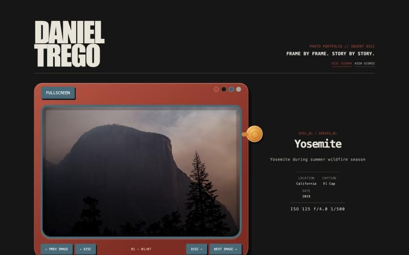
Designing the viewer
The viewer settled into a calm, static player: the reel sits in a notch behind the body, the photo sits in a die-cut cardboard mat, and only the reel moves.
| Problem | What stayed | Why |
|---|---|---|
| Disc and viewer read as two things | The reel loaded behind the viewer, its top half showing through a notch | It looks like a physical reel in a real View-Master |
| Proportions didn't match | A wide, angular, flat-bottomed notch, with the reel scaled to fill it | The deep scoop looked wrong; angular matched the original |
| Disc design | Tinted thumbnails in the windows, up to 14 frames per reel | Shows the real photos while keeping the reel's colour |
| Title and numbers | A trapezoid title window plus a small frame-number window | Reads as printed on the viewer |
| The viewer kept moving | Only the reel turns; a quick fade on a disc change | Motion pulled attention from the photos |
| Photo framing | A die-cut cardboard mat with an even cut edge, no shading | Feels like a slide mount; nothing competes with the photo |
| Advancing | An orange thumb-slider lever, with the arrows kept | The lever is the signature move; the arrows keep it accessible |
| Colour | Red and blue on the viewer; black or white in fullscreen | Fewer choices, and fullscreen stays neutral |
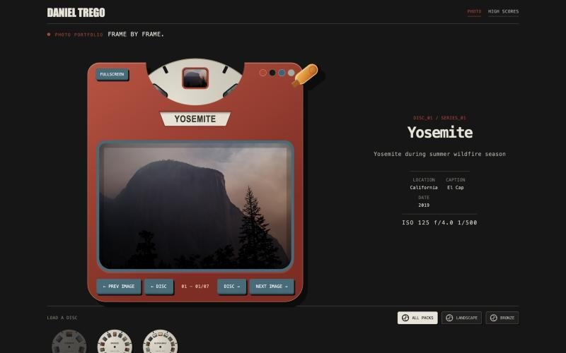
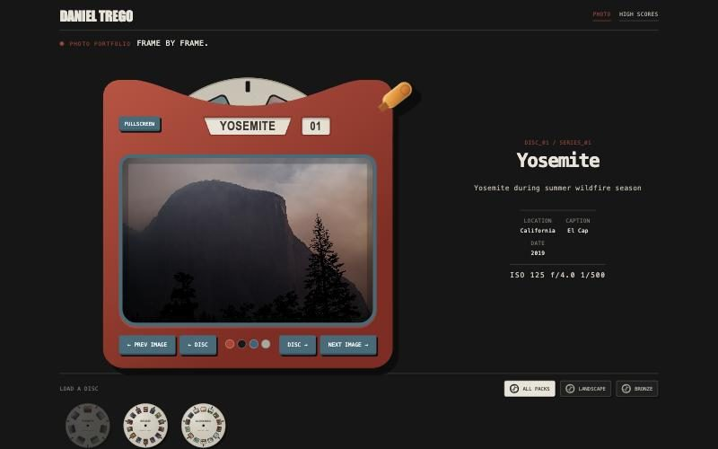
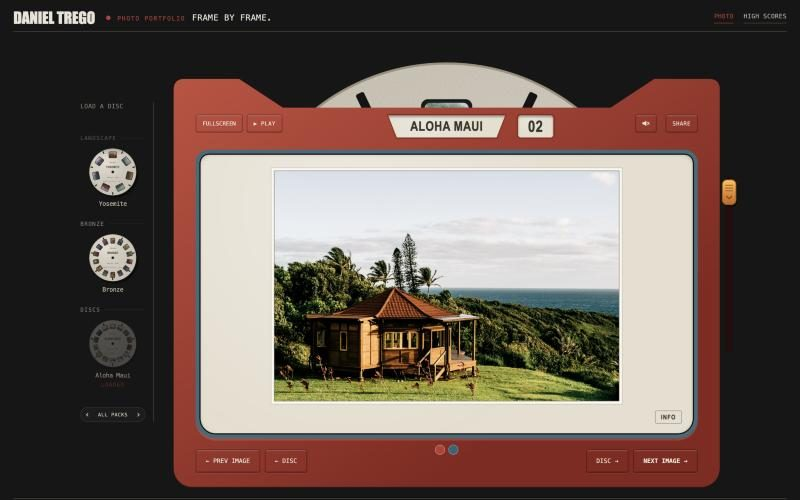
Options we weighed
The mockup rounds, redrawn as wireframes. Picks are outlined.
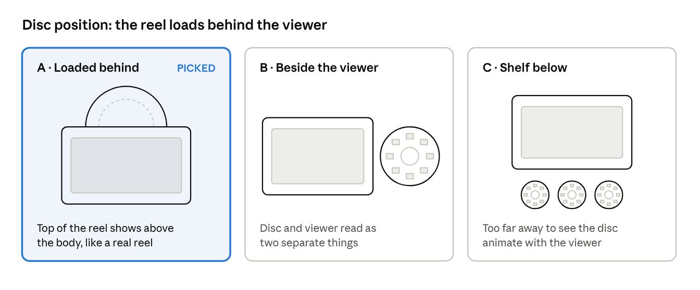
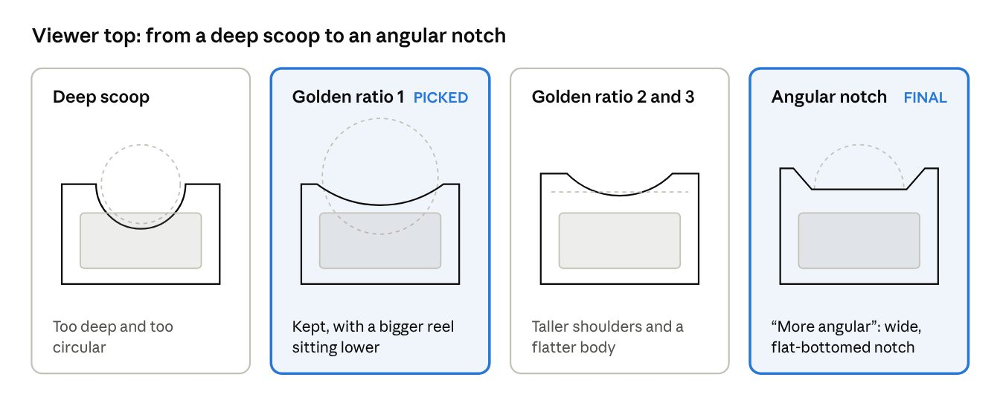
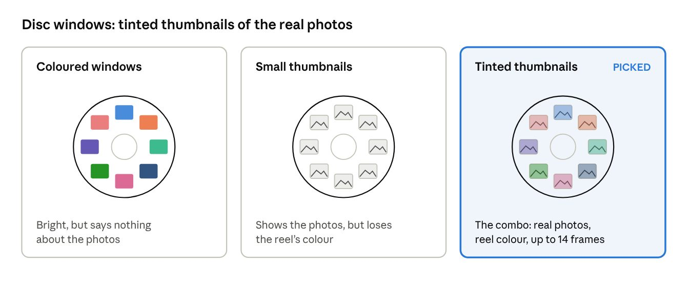
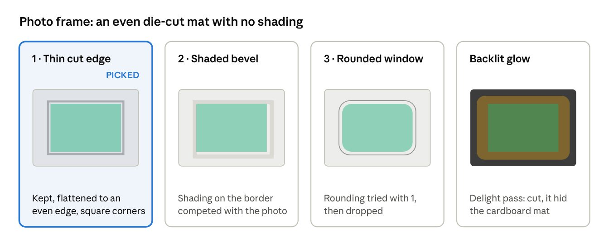
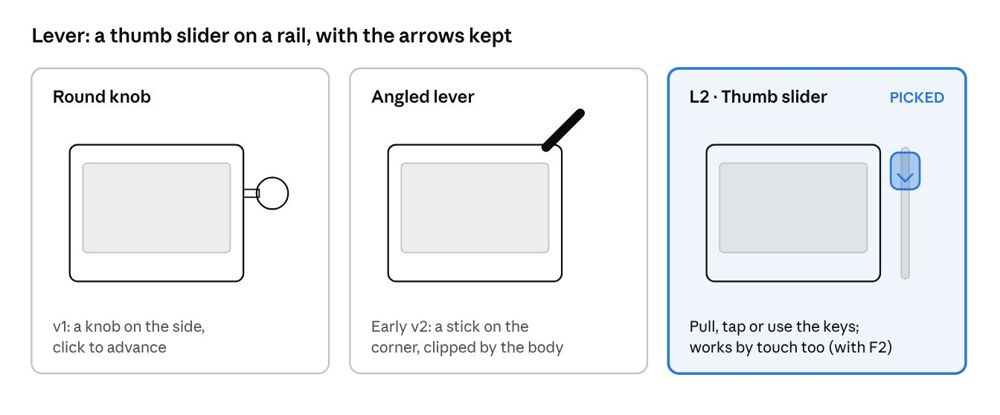
Getting photos in
Adding a disc takes one paste: drop an album's share link into the CMS, and the photos appear on the site about a minute later. A picker chooses which frames make the disc.
- Lightroom import. Public Lightroom share links are read directly, with no Adobe login. Each photo comes with its caption, date and camera settings, and the disc's orientation is worked out automatically.
- Apple Photos import. Shared albums with Public Website turned on work the same way. iCloud's photo links expire, so chosen photos are copied onto the site.
- Sync rules. Removing a disc in the CMS removes it from the site. Albums refresh once a day, or by hand.
- CMS cleanup. One entry per disc: name, pack, album link, chosen photos. Machine data lives in its own file, so the form only shows what a person edits.
- The picker. Each album appears as a contact sheet. Tick up to 14 frames in order and save; the site updates in 1–2 minutes. Reading Lightroom "likes" was tested too, but the picker won because it's explicit.
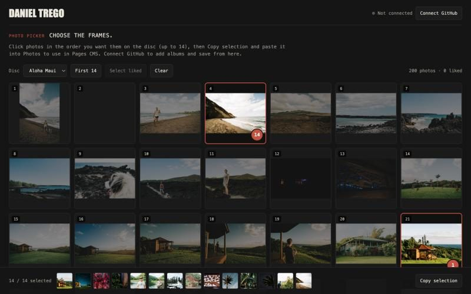
Sharing
Every disc has a shareable link that previews as the reel itself and opens the viewer on the right frame.
- Reel links. A link can preload a disc and frame, and the address bar follows the viewer as you browse.
- Preview cards. Each reel gets a 1200×630 card showing the reel with its photos, not just the first photo.
- Share sheet. SHARE opens the system share sheet on Mac, iPhone and Windows, and falls back to copying the link.
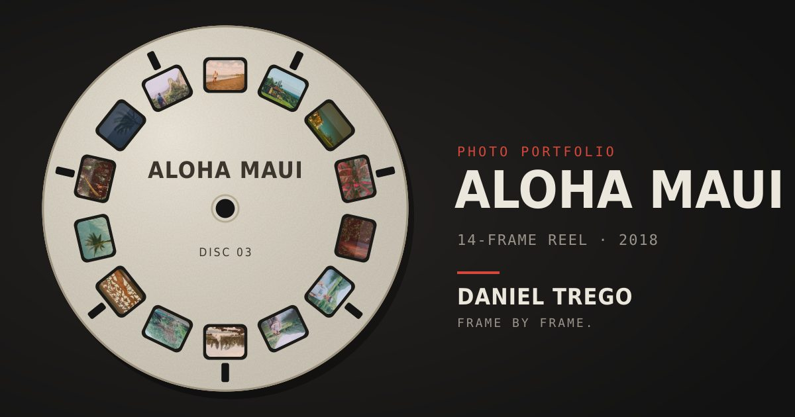
Phones and fullscreen
Fullscreen and phone-sideways are about one thing: the photo as large as the screen allows, at its own shape, with the controls fading out of the way.
- Native ratio. Photos keep their own shape. The photo sets the window size, with no resize animation and no side bars.
- Fullscreen. A quiet eyepiece bezel in black or white. Controls sit on the edges, and the lever runs down the right side.
- Theater mode. iPhones can't fullscreen a web page, so turning the phone sideways switches to a full-screen layout on its own.
- Touch. Swipe to change frames, tap the edges, or drag the lever.
- Slideshow. PLAY advances every 6 seconds; the lever pulls itself and the reel turns on each step. It starts paused.
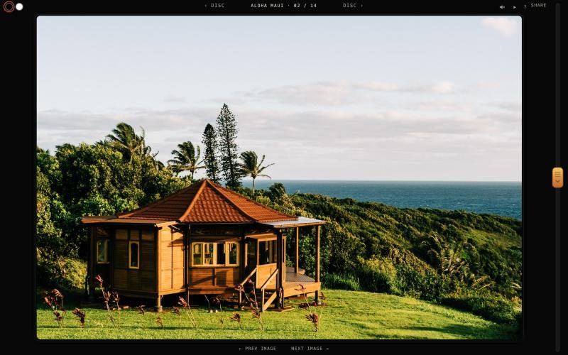
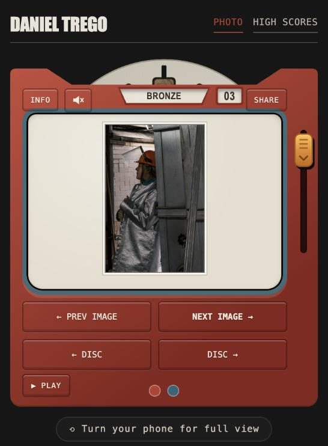
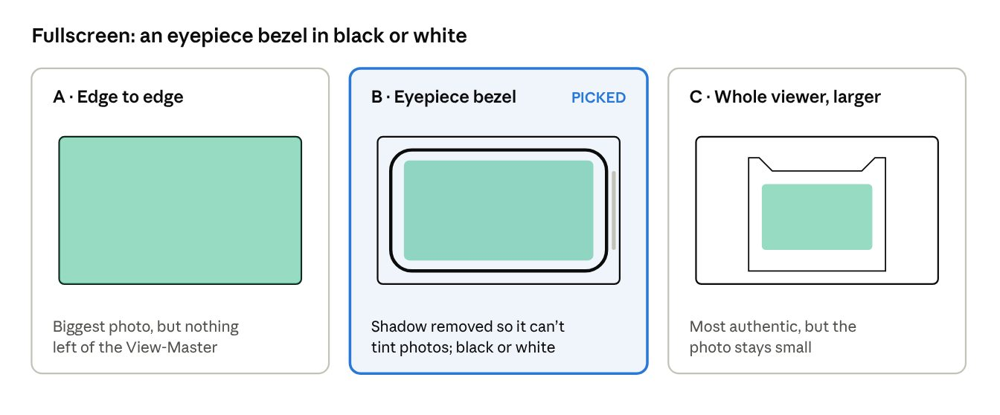
Layout and information
The page became two columns: a slim disc rack on the left and a large player taking about three-quarters of the width.
- Header. One row with the site title, a red PHOTO PORTFOLIO mark and menu links, ready for a future landing page.
- Rack. Discs grouped by pack, with a quiet pack switcher. On smaller screens the rack moves below the viewer.
- Page load. The viewer appears first, then the reel, then the photo.
- Info. Only the caption is printed on the slide mount. INFO opens a reel sleeve with the disc's story and every frame.
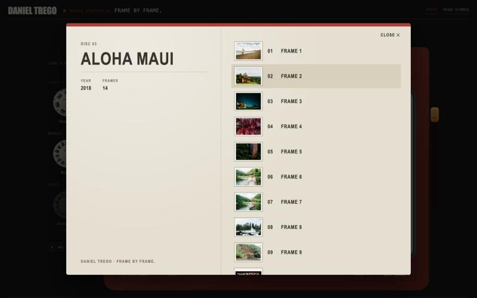
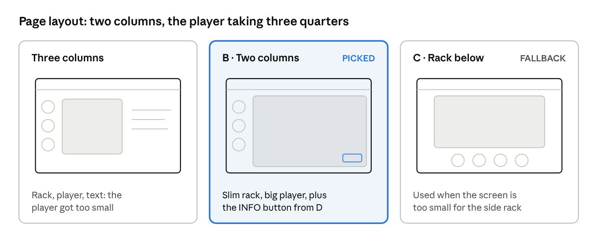
Delight pass
Twelve small ideas were built in one go and judged live. Nine stayed and three were cut. The rule that emerged: delight beside the photo stays; anything that changes how the photo looks goes.
| Idea | Result |
|---|---|
| End-of-reel card | Kept, a favourite |
| Slideshow PLAY | Kept, with the lever pulling itself |
| Resume where you left off | Kept |
| Lever click sound | Kept, off by default |
| Catalog number and "Made in Detroit" on the reel | Kept |
| Controls fade in fullscreen | Kept |
| Frame strip in fullscreen | Kept |
| Keyboard shortcuts list | Kept |
| Haptic tick on Android | Kept |
| Backlit glow behind the photo | Cut: hid the cardboard mat |
| Paper sleeves in the rack | Cut: busy |
| Zoom in fullscreen | Cut: not needed |
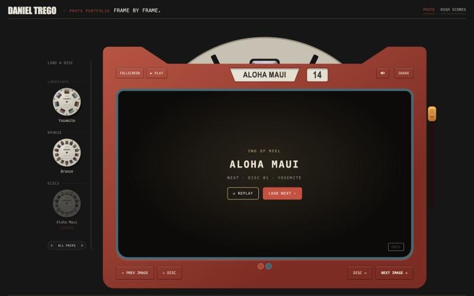
Behind the scenes
Everything authored lives in one private source; the public site is generated from it, so there's one place to edit and nothing to keep in sync by hand.
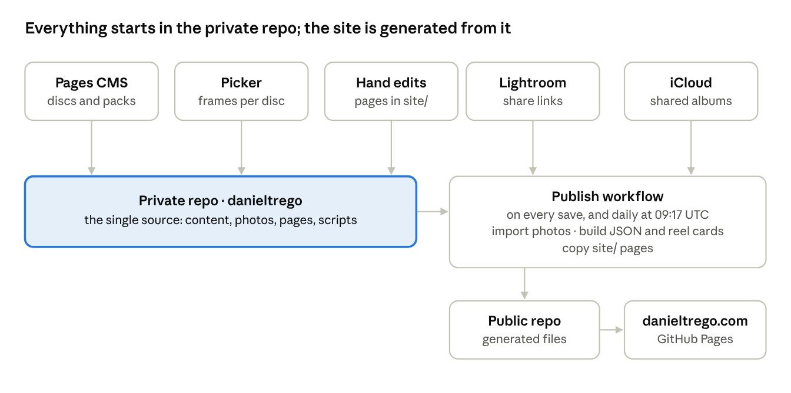
What's next
- A landing page, with the viewer moving to a final address (old links will keep working).
- Slideshow links, and auto-play when entering fullscreen.
- Smaller images for phones, and captions pulled from album metadata.
- Possibly a version others can attach to their own portfolios.